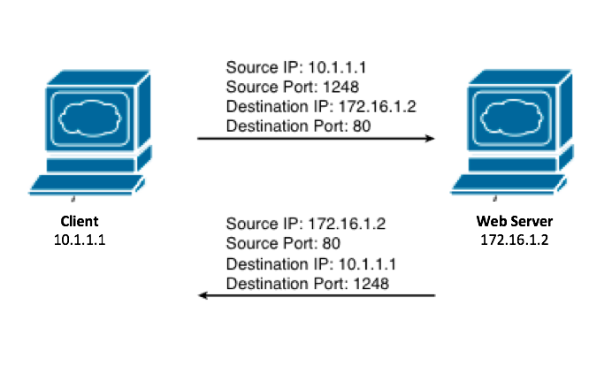

P106 TCP and UDP <<
Previous Next >> P108 Networking Transfer Protocols
P107 TCP IP Stack
Each client and server has an IP address. Clients and servers are identified on the network by their IP addresses. In addition to an IP address, each machine has numerous “ports” that we can utilize. A port is an endpoint to a logical connection. A client program specifies a particular server program on a computer in a network by identifying a port. Ports allow a single client to communicate simultaneously with multiple other devices, separating each session by using a designated port number.
每個客戶端和服務器都有一個IP地址。 客戶端和服務器通過其IP地址在網絡上進行標識。 除了IP地址外，每台機器都有許多我們可以利用的“端口”。 端口是邏輯連接的端點。 客戶端程序通過識別端口來指定網絡中計算機上的特定服務器程序。 端口允許單個客戶端與多個其他設備同時通信，並使用指定的端口號分隔每個會話。
example
The best way to envision this is to think of an apartment building. Your building’s address may be 123 Main Street; this would be equivalent to your IP address. But how does the mailman know which door to use when delivering your package, since multiple families live at 123 Main Street? The mailman uses your apartment number, which defines which door in the building he would knock on to deliver your package. These apartment doors would be called ports in a computer, and the computer knows which programs and sessions requested information over the network by tracking the port numbers that make the requests.
設想此問題的最佳方法是考慮一棟公寓樓。 您的建築物的地址可能是大街123號； 這相當於您的IP地址。 但是由於多個家庭居住在Main Street 123號，郵遞員如何知道在運送包裹時要使用哪扇門？ 郵遞員使用您的公寓號碼，該號碼定義了他敲樓時要送出包裹的門。 這些公寓門在計算機中稱為端口，計算機通過跟踪發出請求的端口號來知道哪些程序和會話在網絡上請求了信息。
example
Similar to an apartment building, on the network, let’s assume the client has an IP address of 10.1.1.1, which we call the source IP. The computer’s web browser chose a port number of 1248 from which to initiate the communication and a destination of 172.16.1.2 (which would be a web server for some company) and a destination port of 80 (which is the common port number for all web page traffic). The server then replies from its IP address (172.16.1.2) and port 80 to the client who made the request at their IP address of 10.1.1.1 and port 1248. As they continue the conversation, they will continue to use these IP addresses and ports, and at the same time the web server can maintain other communications with other customers, just like the client can surf to other websites in other tabs in their browser simultaneously without mixing the data, since they are separated by the port numbers. The diagram below illustrates this communication.
與網絡上的公寓樓類似，我們假設客戶端的IP地址為10.1.1.1，我們將其稱為源IP。 計算機的Web瀏覽器選擇了用於發起通信的端口號1248，以及目的地172.16.1.2（對於某些公司而言將是Web服務器）和目的端口80（這是所有Web站點的通用端口號）。 頁面訪問量）。 然後，服務器從其IP地址（172.16.1.2）和端口80答复給以其IP地址10.1.1.1和端口1248發出請求的客戶端。隨著他們繼續進行對話，他們將繼續使用這些IP地址和 端口，同時Web服務器可以維持與其他客戶的其他通信，就像客戶端可以同時瀏覽其瀏覽器其他選項卡中的其他網站而無需混合數據一樣，因為它們由端口號分隔。 下圖說明了這種通信。
Port numbers are considered either well-known or ephemeral. Well-known port numbers are between 1 and 1023, like the web browsing port number of 80 in our last example. Port 80 is reserved as a well-known port for all hypertext transfer protocol (HTTP) traffic. Ephemeral port numbers are considered “high-numbered” ports and start at 1024 and go up to 65,535. These are usually the ports used by the client making the request, as we saw in our web browsing example, above, when the client chose port 1248 as its requesting port.
端口號被認為是眾所周知的或短暫的。 眾所周知的端口號在1到1023之間，例如我們上一個示例中的Web瀏覽端口號80。 端口80保留為所有超文本傳輸協議（HTTP）通信的眾所周知的端口。 臨時端口號被認為是“高編號”端口，起始於1024，最高可達65,535。 這些通常是客戶端發出請求的端口，正如我們在上面的Web瀏覽示例中所見，當客戶端選擇端口1248作為其請求端口時。

P106 TCP and UDP <<
Previous Next >> P108 Networking Transfer Protocols